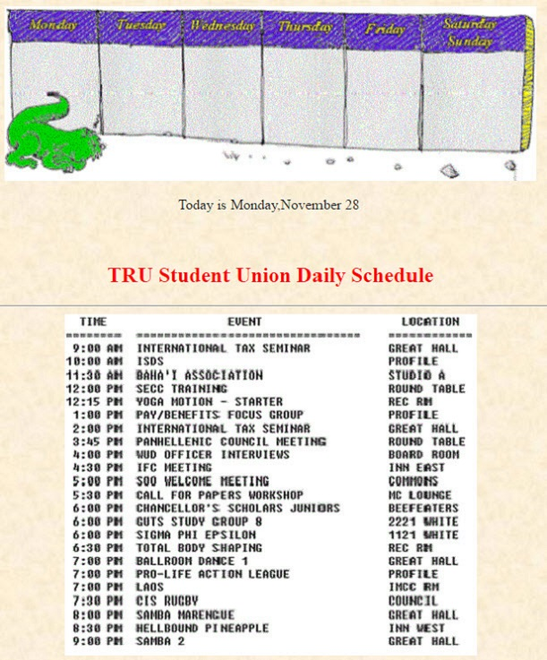

COMP 2680 Java Script Exercise
|
Displaying the Daily Events at TRU Student Union
The TRU Student Union is a gathering place for students
and faculty at Thompson Rivers University. A Web site has been created
in order to better advertise the union and its activities. You've been
asked to work on the Web page that will list the daily union events.
Union events are usually printed out and displayed on bulletin boards and
kiosks around campus. In order to keep the daily events current, this
daily event sheet will be scanned and saved as TRU, which can then be inserted
into the Web page each day. There is also a TRU Student Union "mascot" who
regularly appears on the event sheet. Normally, there is a different picture
of the mascot for each day of the week.
The page you'll create will use JavaScript to display the current day and
date, as well as a different logo for each day of the week. In fact, the entire
contents of the Web page should be generated by JavaScript.
A preview of the page you'll create is shown below:

- To create this Web page follow these guidelines:
- Open the file, TRU.txt, in your text editor and save it as
TRU.htm. Within the body of the HTML file, use JavaScript to do all
of the tasks listed below.
- Determine the day of the week, and then display the following inline images
for each day, centered horizontally at the top the page:
| Sunday | Weekend.gif |
| Monday | Monday.gif |
| Tuesday | Tuesday.gif |
| Wednesday | Wednesday.gif |
| Thursday | Thursday.gif |
| Friday | Friday.gif |
| Saturday | Weekend.gif |
You may use whatever methods seem appropriate to you to display the appropriate
image on each day (array, conditional statements, etc.)
- Below the daily image, insert a line centered on the page, stating: "Today
is" followed by the day of the week and then the current month of day of the
month.
- Below the date, insert the text "TRU Student Union Daily Schedule", centered on
the page as an h2 heading. Color the text red (see the above figure.)
- Below the title line, insert a horizontal
line, followed by the Events.gif inline image (centered on the page), followed
by another horizontal line.
- Test your JavaScript program for each of the seven days of a week. Verify that the appropriate day, date and inline image
is shown for each date.